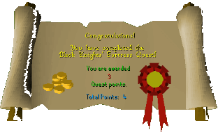

Black Knight's Fortress
Description: The black knights are up to no good. You are hired by the white knights to spy on them and uncover their evil scheme.Difficulty: Intermediate
Length: Medium
Items & Skills Needed:
- 12 Quest points
Recommended:
- Food and/or equipment to run past aggressive level 33 Black Knights
Reward: 3 Quest points, 2,500 coins
Instructions:
Talk to Sir Amik Varze. He will tell you that the Black knights are planning to destroy the White knights. He will ask you to spy on them. Accept his challenge.
The next place you need to go is the Monastery. It is located east of Ice Mountain. Once there, go north and you will see some Cabbages. Pick one (or two in case you misclick and eat a cabbage) up.
Now it's time to start your mission. Go to the Black Knights Fortress which is located on the north side of Ice Mountain. If you have the Bronze medium helmet and the Iron chainmail right now, wear them.
After donning them, open the sturdy door in the central part of the fortress, facing the south. Push the wall just behind the door and go up the ladder.
After you push the wall, climb the 2 ladders to get to the top floor. Climb down the ladder on your southeast side.
Open the door on your east side. Open the other door and climb up the ladder. This room has two cannons and a Black knight.
Climb down the ladder on your east side. You will now be in a room with a Zamorak altar. Open the door and a Black knight will attack you. Either kill him or ignore him, then keep going. Climb the ladder on your southwest. Now you will be in a small room.
Now we will start spying. Click the 'Listen-at grill' option. The witch will say that the secret weapon is almost ready. She will need the last ingredient which is a Cabbage that grew in Draynor Manor. She will say that if the goblin fetches the wrong Cabbage, the secret weapon will be destroyed. That's how you'll sabotage the weapon!
Go back downstairs to the main floor and push the wall.
Now it's time to open the door on your east. One of the guards will say that the Black knights are having an important meeting and they will kill everyone who gets in. Say that you are brave and go in.
One of the Black knights will attack you. Either kill him or go up the ladder. Walk east and south and push the wall. You will see a hole. Remember the Cabbage you picked earler? Use that Cabbage on the hole. The Cabbage will fall into the cauldron and destroy the weapon. Now your job is done.
Go back and talk to Sir Amik Varze. He will reward you.
Congratulations, Quest Complete!

This quest guide was written on RuneHQ by Henry-x. Thanks to DNKevin, Weezy patgil2003, MarilynManson, Nitr021, Ozzy, and pokemama for corrections.
This quest guide was entered into the database on Sat, Feb 07, 2004, at 10:08:20 PM by Chownuggs and CJH and was last updated on Sat, Feb 05, 2005, at 06:17:02 AM by nitro21.